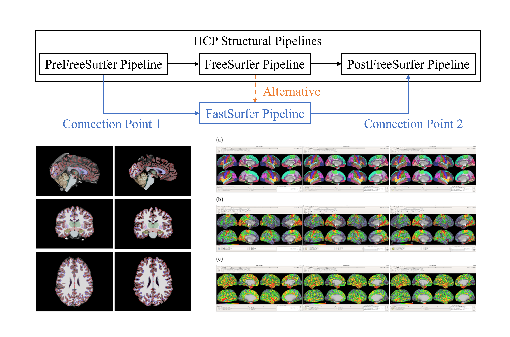
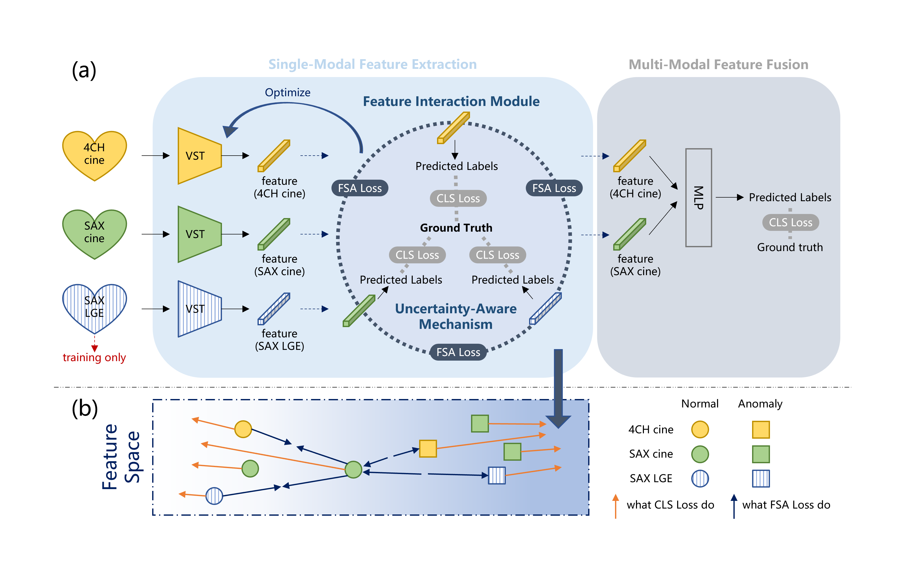

|
Siqing Yuan I am a Master's student in School of Biomedical Engineering at ShanghaiTech University, co-trained at the IDEA Lab and United Imaging Intelligence (R&D). I am advised by Prof. Dinggang Shen and co-supervised by Dr. Zhong Xue and Dr. Lei Chen. My research centers on deep learning for medical image analysis, with a current focus on cardiac MRI images.
CV
View
|

|
ProjectI have worked on deep learning for medical image analysis through coursework projects and a collaboration with United Imaging Intelligence. Looking ahead, my research will focus on the analysis of cardiac signals and imaging across 2D, 3D, and 4D data (e.g., ECG, CT, cine CMR), developing data- and task-driven models and exploring vision–language models for automated report generation. |
|  |
FastSurfer as an Alternative to FreeSurfer in HCP Minimal Preprocessing Pipeline
Siqing Yuan Course Project, 2023 project report By replacing the FreeSurfer Pipeline in the Human Connectome Project (HCP) minimal preprocessing pipeline with FastSurfer Pipeline, this project significantly improves the processing efficiency of the HCP structural pipeline. |

|
Estimate Aβ-PET Pattern from fMRI Data based on Deep Learning
Siqing Yuan, Haoyue Yuan Course Project, 2023 project report Leveraging multi-level rs-fMRI functional connectivity to build brain networks and using graph convolutional networks for cross-modal mapping (key innovation), this project robustly predicts individual Aβ-PET deposition patterns and whole-brain SUVR, enabling early AD assessment without radioactive tracers. |

|
CoMoSeg: Anatomical Consistency and Cross Modality Guidance for Robust Brain Tumor Segmentation Using Partially Labeled MR Sequences
Zehao Weng, Dongdong Gu, Yuzhong Chen, Siqing Yuan, Chen Xie1, Zhenguo Zhang, Jinwei Kong, Zehong Cao, Zhong Xue and Dinggang Shen CMMCA (MICCAI workshop), 2025 arixiv CoMoSeg is a multi‑modality MR brain tumor segmentation model that introduces a cross‑modality guidance module to exploit anatomical consistency across sequences, delivering a more robust and generalizable segmentation framework. |
|  |
CC-CMR: LGE-Guided Cross-Modality Contrastive Learning for Gadolinium-Free Cardiomyopathy Screening in Cine CMR
Siqing Yuan, Yulin Wang, Zirui Cao, Yueyan Wang, Zehao Weng, Hui Wang, Lei Xu, Zixian Chen, Lei Chen, Zhong Xue and Dinggang Shen MLMI (MICCAI workshop), 2025 arixiv CC‑CMR is a gadolinium‑free cardiomyopathy screening framework that implicitly encodes LGE information into the cine CMR feature space via contrastive learning, outperforming cine‑only baselines while enhancing clinical scalability. |
|
|
An interpretable model for cardiomyopathy subtype classification using contrastive learning and multi‑sequence cardiac MRI fusion Siqing Yuan et al. In progress, 2025 video We present an interpretable cardiomyopathy subtype classification model that leverages contrastive learning and multi‑sequence CMR fusion (cine 4CH, cine SAX, SAX LGE), achieving strong and robust generalization across vendors, field strengths, and centers. |
|
Feel free to contact me to explore potential collaboration. |